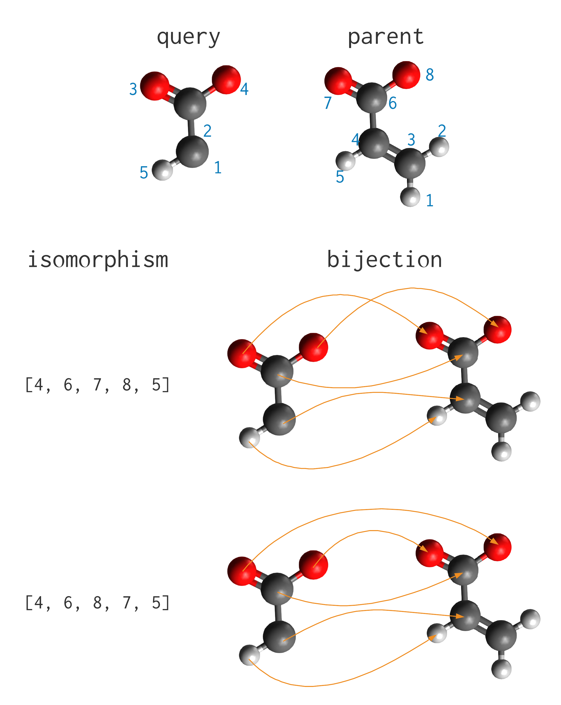

Subgraph matching (substructure searches)
PoreMatMod.jl conducts subgraph matching, i.e. searches for subgraphs of a parent graph isomorphic to a query graph, using Ullmann's algorithm for subgraph isomorphisms.
For subgraph matching, both the parent crystal structure and query fragment are represented by node-labeled (by the chemical species) graphs (nodes = atoms, edges = bonds). For crystals, bonds across the unit cell boundaries of periodic materials are accounted for, allowing us to find subgraph isomorphisms when the fragment is split across a unit cell boundary.
Substructure Searches: how to
To learn by example, suppose we wish to search the IRMOF-1 crystal structure for p-phenylene fragments.

First, we load the query fragment and parent crystal structure:
parent = Crystal("IRMOF-1.cif")
infer_bonds!(parent_xtal, true) # true to infer bonds across the periodic boundary
query = moiety("p-phenylene.xyz")then execute a search for subgraphs of the parent that "match" (are isomorphic to) the graph of the query fragment:
search = substructure_search(query, parent)
# output
p-phenylene.xyz ∈ IRMOF-1.cif
96 hits in 24 locations.The ∈ (\in then hit Tab for this Unicode character) or in infix operators will also execute the search:
search = query ∈ parent
# or
search = query in parent
# or
search = substructure_search(query, parent)Both functions substructure_search and ∈ return a Search object with attributes:
search.query: the query in the searchsearch.parent: the parent in the searchsearch.isomorphisms: the result of a search–-a nested vector giving the query-to-parent correpondences.
search.isomorphisms
# output
24-element Vector{Vector{Vector{Int64}}}:
[[233, 306, 318, 245, 185, 197, 414, 329, 402, 341], [245, 318, 306, 233, 197, 185, 402, 341, 414, 329], [306, 233, 245, 318, 185, 197, 341, 402, 329, 414], [318, 245, 233, 306, 197, 185, 329, 414, 341, 402]]
[[234, 305, 317, 246, 186, 198, 413, 330, 401, 342], [246, 317, 305, 234, 198, 186, 401, 342, 413, 330], [305, 234, 246, 317, 186, 198, 342, 401, 330, 413], [317, 246, 234, 305, 198, 186, 330, 413, 342, 401]]
[[235, 308, 319, 248, 187, 200, 415, 331, 404, 344], [248, 319, 308, 235, 200, 187, 404, 344, 415, 331], [308, 235, 248, 319, 187, 200, 344, 404, 331, 415], [319, 248, 235, 308, 200, 187, 331, 415, 344, 404]]
[[236, 307, 320, 247, 188, 199, 416, 332, 403, 343], [247, 320, 307, 236, 199, 188, 403, 343, 416, 332], [307, 236, 247, 320, 188, 199, 343, 403, 332, 416], [320, 247, 236, 307, 199, 188, 332, 416, 343, 403]]
[[237, 262, 280, 255, 189, 207, 376, 333, 358, 351], [255, 280, 262, 237, 207, 189, 358, 351, 376, 333], [262, 237, 255, 280, 189, 207, 351, 358, 333, 376], [280, 255, 237, 262, 207, 189, 333, 376, 351, 358]]
[[238, 261, 279, 256, 190, 208, 375, 334, 357, 352], [256, 279, 261, 238, 208, 190, 357, 352, 375, 334], [261, 238, 256, 279, 190, 208, 352, 357, 334, 375], [279, 256, 238, 261, 208, 190, 334, 375, 352, 357]]
[[239, 264, 277, 254, 191, 206, 373, 335, 360, 350], [254, 277, 264, 239, 206, 191, 360, 350, 373, 335], [264, 239, 254, 277, 191, 206, 350, 360, 335, 373], [277, 254, 239, 264, 206, 191, 335, 373, 350, 360]]
[[240, 263, 278, 253, 192, 205, 374, 336, 359, 349], [253, 278, 263, 240, 205, 192, 359, 349, 374, 336], [263, 240, 253, 278, 192, 205, 349, 359, 336, 374], [278, 253, 240, 263, 205, 192, 336, 374, 349, 359]]
[[241, 290, 299, 252, 193, 204, 395, 337, 386, 348], [252, 299, 290, 241, 204, 193, 386, 348, 395, 337], [290, 241, 252, 299, 193, 204, 348, 386, 337, 395], [299, 252, 241, 290, 204, 193, 337, 395, 348, 386]]
[[242, 289, 300, 251, 194, 203, 396, 338, 385, 347], [251, 300, 289, 242, 203, 194, 385, 347, 396, 338], [289, 242, 251, 300, 194, 203, 347, 385, 338, 396], [300, 251, 242, 289, 203, 194, 338, 396, 347, 385]]
⋮
[[260, 283, 296, 271, 212, 219, 392, 356, 379, 367], [271, 296, 283, 260, 219, 212, 379, 367, 392, 356], [283, 260, 271, 296, 212, 219, 367, 379, 356, 392], [296, 271, 260, 283, 219, 212, 356, 392, 367, 379]]
[[265, 314, 323, 276, 213, 224, 419, 361, 410, 372], [276, 323, 314, 265, 224, 213, 410, 372, 419, 361], [314, 265, 276, 323, 213, 224, 372, 410, 361, 419], [323, 276, 265, 314, 224, 213, 361, 419, 372, 410]]
[[266, 313, 324, 275, 214, 223, 420, 362, 409, 371], [275, 324, 313, 266, 223, 214, 409, 371, 420, 362], [313, 266, 275, 324, 214, 223, 371, 409, 362, 420], [324, 275, 266, 313, 223, 214, 362, 420, 371, 409]]
[[267, 316, 322, 273, 215, 221, 418, 363, 412, 369], [273, 322, 316, 267, 221, 215, 412, 369, 418, 363], [316, 267, 273, 322, 215, 221, 369, 412, 363, 418], [322, 273, 267, 316, 221, 215, 363, 418, 369, 412]]
[[268, 315, 321, 274, 216, 222, 417, 364, 411, 370], [274, 321, 315, 268, 222, 216, 411, 370, 417, 364], [315, 268, 274, 321, 216, 222, 370, 411, 364, 417], [321, 274, 268, 315, 222, 216, 364, 417, 370, 411]]
[[285, 310, 328, 303, 225, 231, 424, 381, 406, 399], [303, 328, 310, 285, 231, 225, 406, 399, 424, 381], [310, 285, 303, 328, 225, 231, 399, 406, 381, 424], [328, 303, 285, 310, 231, 225, 381, 424, 399, 406]]
[[286, 309, 327, 304, 226, 232, 423, 382, 405, 400], [304, 327, 309, 286, 232, 226, 405, 400, 423, 382], [309, 286, 304, 327, 226, 232, 400, 405, 382, 423], [327, 304, 286, 309, 232, 226, 382, 423, 400, 405]]
[[287, 312, 325, 302, 227, 230, 421, 383, 408, 398], [302, 325, 312, 287, 230, 227, 408, 398, 421, 383], [312, 287, 302, 325, 227, 230, 398, 408, 383, 421], [325, 302, 287, 312, 230, 227, 383, 421, 398, 408]]
[[288, 311, 326, 301, 228, 229, 422, 384, 407, 397], [301, 326, 311, 288, 229, 228, 407, 397, 422, 384], [311, 288, 301, 326, 228, 229, 397, 407, 384, 422], [326, 301, 288, 311, 229, 228, 384, 422, 397, 407]]In this example, the query fragment (p-phenylene) occurs in 24 different location in the parent crystal structure, with 4 symmetry-equivalent isomorphisms at each location, for a total of 96 subgraph isomorphisms.
The number of locations–-the number of unique substructures of the parent to which the query is isomorphic–-is the length of search.isomorphisms.
nb_locations(search) # = length(search.isomorphisms)
# output
24Element i_loc of search.isomorphisms, search.isomorphisms[i_loc], is a vector of isomorphisms that share the same subset of atoms in the parent, each of which correspond to a different orientation of the query overlaying that parent substructure. The function nb_ori_at_loc outputs a vector whose element i_loc is the number of overlay orientations at that location.
nb_ori_at_loc(search) # 24-element Vector{Int64}: [4, 4, 4, ..., 4]Each individual isomorphism isom = search.isomorphisms[i_loc][i_ori] for a specific location i_loc and orientation i_ori indicates the correspondence from the query to the parent struture: if atom q of the query maps to atom p of the parent, then isom[q] == p.
The total number of isomorphisms is given by nb_isomorphisms(search).
nb_isomorphisms(search) # = sum(nb_ori_at_loc(search))
# output
96N.b. to generate a Crystal containing only the substructures of the parent which are isomorphic to the query, use:
isomorphic_substructures(search)
# output
Name: IRMOF-1.cif
Bravais unit cell of a crystal.
Unit cell angles α = 90.000000 deg. β = 90.000000 deg. γ = 90.000000 deg.
Unit cell dimensions a = 25.832000 Å. b = 25.832000 Å, c = 25.832000 Å
Volume of unit cell: 17237.492730 ų
# atoms = 240
# charges = 0
chemical formula: Dict(:H => 2, :C => 3)
space Group: P1
symmetry Operations:
'x, y, z'Stereochemistry and Isomorphism
The node-labeled graph representation of a molecule/crystal structure is invariant with respect to stereochemistry. In other words, every rotational/conformational state and stereoisomer of a structure share the same graph representation. What this means is that PoreMatMod.jl may find more subgraph matches than you may first expect.
Example 1: Suppose we search for a carboxylate with beta hydrogen in acrylate.

There is clearly only one substructure of acrylate that matches the query. However, there are two subgraph isomorphisms, because swapping the oxygen atoms in the point cloud representation results in the same graph representation. The above image gives a closer look at how these degenerate representations translate to multiple isomorphisms for a single occurence of a fragment in a structure.
Example 2: Suppose we search the IRMOF-1 parent structure for the BDC.xyz linker as the query instead of the more minimal p-phenylene query fragment. Thanks to the two carboxyl groups, the total number of isomorphisms is multiplied by a factor of 4, due to the 180 degree rotation of these groups having no effect on the graph representation. The number of locations at which the isomorphisms are found, however, is unchanged.
query = moiety("BDC.xyz")
search = query ∈ parent
nb_isomorphisms(search)
# output
384nb_locations(search)
# output
24Note: We advise to define the query using the most minimal structure that matches the targeted parent substructure.
Documentation for functions
PoreMatMod.Search — Typesearch = Search(parent, query, results)Stores the parent and query used for a substructure search and the results (isomorphisms) of the subgraph matching algorithm.
attributes
search.parent::Crystal# the parent in the searchsearch.query::Crystal# the query in the searchsearch.isomorphisms::Vector{Vector{Vector{Int}}}# the query-to-parent correspondences
The isomorphisms are grouped by location in the parent Crystal and can be examined using nb_isomorphisms, nb_locations, and nb_ori_at_loc.
Subgraph isomorphisms are encoded like
isom = search.isomorphisms[i_loc][i_ori] = [7, 21, 9]where isom[k] is the index of the atom in search.parent corresponding to atom k in search.query for the isomorphism at location i_loc and orientation i_ori.
PoreMatMod.substructure_search — Functionsubstructure_search(query, parent; disconnected_component=false)Searches for a substructure within a Crystal and returns a Search struct containing all identified subgraph isomorphisms. Matches are made on the basis of atomic species and chemical bonding networks, including bonds across unit cell periodic boundaries. The search moiety may optionally contain markup for designating atoms to replace with other moieties.
Arguments
query::Crystalthe search moietyparent::Crystalthe parent structuredisconnected_component::Bool=falseif true, disables substructure searching (e.g. for finding guest molecules)
PoreMatMod.nb_ori_at_loc — Functionnb_ori_at_loc(search)Returns a array containing the number of isomorphic configurations at a given location (collection of atoms) for which the specified Search results contain isomorphisms.
Arguments
search::Searcha substructureSearchobject
PoreMatMod.nb_isomorphisms — Functionnb_isomorphisms(search::Search)Returns the number of isomorphisms found in the specified Search
Arguments
search::Searcha substructureSearchobject
PoreMatMod.nb_locations — Functionnb_locations(search::Search)Returns the number of unique locations in the parent (sets of atoms in the parent) at which the specified Search results contain isomorphisms.
Arguments
search::Searcha substructureSearchobject
PoreMatMod.isomorphic_substructures — Functioniso_structs = isomorphic_substructures(s::Search)::CrystalReturns a crystal consisting of the atoms of the parent involved in subgraph isomorphisms in the search s